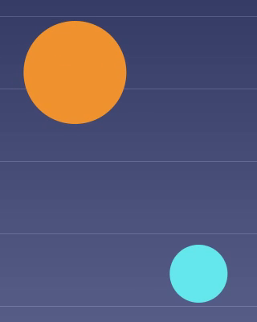
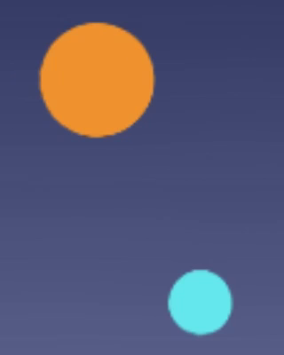
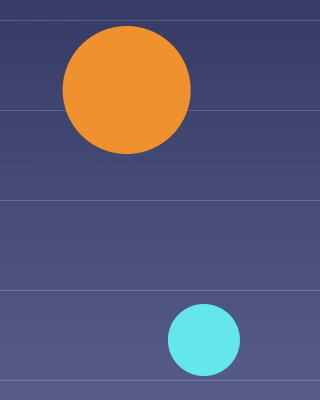

30 fps → 60 fps
iPhone 视频 30帧转60帧：逐帧看补出来的那一帧
30fps 的视频每 33.3 毫秒换一张画面。要以 60fps 播放，每两帧之间都需要多一张位于正中间的画面。FrameSmoother 在 iPhone 上用 AI 补帧模型计算出这张画面，原有的帧不重新生成，直接穿插其间，最后保存为 60fps 的视频。视频不会被上传。
01Frame by frame
原视频里没有的那一帧
这是一次真实转换中连续的 3 帧。原视频是 1280×720、30fps、时长 2 秒的测试视频，经 FrameSmoother 以高画质、60fps 处理。中间这一帧在原视频中并不存在。实线标出橙色小球的中心，虚线是它在前后两帧中的位置。



小球中心（小球像素的平均位置）的实测值：橙色 572.8 → 588.9 → 606.2，正中点为 589.5；蓝色 726.8 → 705.3 → 683.4，正中点为 705.1。本次测试在 iOS 模拟器的 CPU 上运行；在 iPhone 上模型通常使用 GPU，结果可能略有差异。
02In numbers
同一段视频的前后对比
| 2 秒测试视频 | 原视频 | 处理后 |
|---|---|---|
| 每秒画面数 | 30 | 60 |
| 文件中的帧数 | 60 | 119 |
| 画面间隔 | 33.3 ms | 16.7 ms |
| 模型计算出的帧 | – | 59 |
| 直接沿用的原始帧 | – | 60 |
之所以是 119 而不是 120，是因为最后一张原始帧之后没有可用来补帧的下一帧，文件就在这一帧结束。
上方是原视频（为了让上下两段速度相同，每帧显示两次），下方是同一段视频经 FrameSmoother 处理后的 60fps 输出。在 60Hz 及以上刷新率的屏幕上，下方小球每一步的移动距离只有一半，看起来更丝滑。
03On the iPhone
用 FrameSmoother 转成 60fps
- 主页
轻点选择视频，从照片图库中选择一个或多个视频。
- 补帧设置 › 输出帧率
保持选中目标帧率，选择 60fps。下方一行会显示输出结果，例如输出：60 fps。
- 补帧质量
高画质使用 AI 模型。快速不使用 AI，通过混合前后的帧来生成，完成得更快。
- 右上角
轻点加入队列。队列会打开，并显示进度和预计剩余时间。
- 队列
当该行显示完成时，轻点它打开预览：可以拖动分隔线对比前后，也可以逐帧查看。关闭预览回到队列后，用该行上向下箭头的按钮存储到照片，用向上箭头的按钮通过隔空投送或其他 App 共享。
04More comparisons